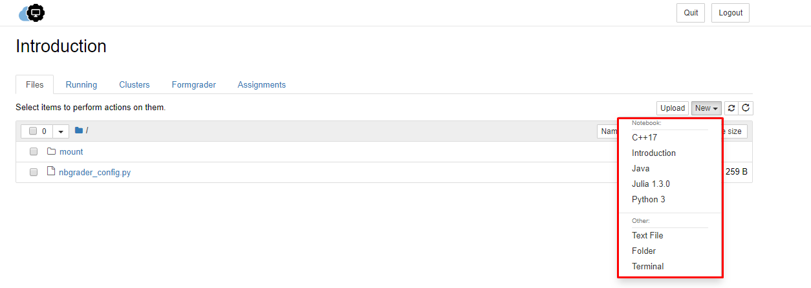
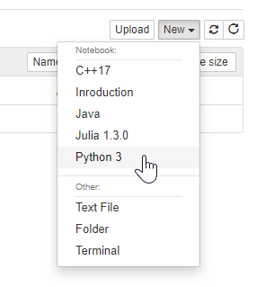
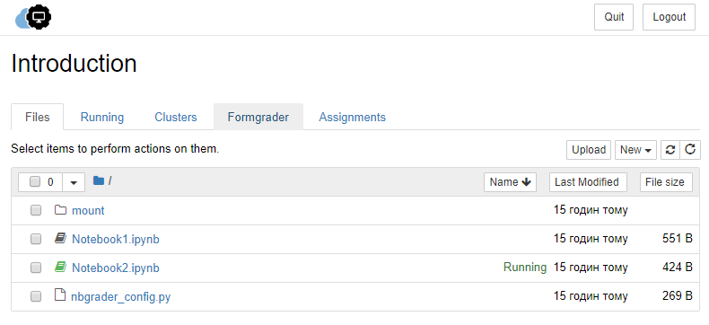
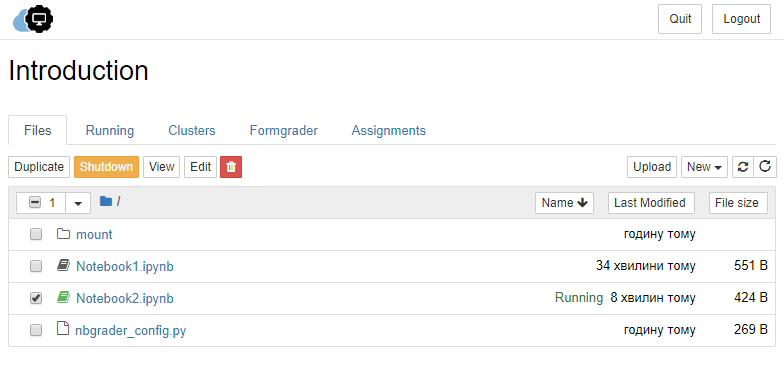
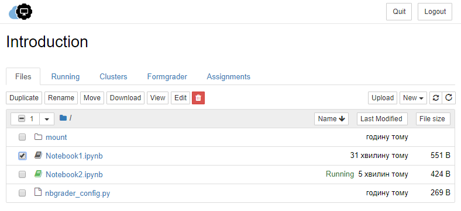

Familiarizing Yourself with a Course Dashboard¶
The File tab is kept all your files; at the same time, you may keep track of all your processes with the help of the Running tab. The third tab, Clusters, allows controlling many individual engines, which are an extended version of the IPython kernel.
Besides, the “New” button in the “Files” tab provides the following options:
{kind=link}
As you may have noticed, the Notebook Dashboard allows more than just Notebooks. There is an option to make a regular text file, a folder, and a terminal. When the text file opens up, it looks like any other text editor. Here you can toggle the line numbers or/and the header, indicate the programming language, can do a find and replace. Besides, you can save, rename or download the file or make a new file.
You can also make folders to keep all your documents organized together. After pressing the “Folder” option, you will get a folder with the name ‘Untitled Folder’ that you may rename instantly.
The terminal is running the terminal of your operating system in the browser. This allows you to run bash, Powershell, and so on in your browser and run any shell command that you might need there.
If you want to start on a notebook, all you need to do is to click the “New” button at the top right of the Files tab and select a kernel from the dropdown. This will open a notebook.
{kind=link}
All notebooks are identifiable by the notebook icon next to their name. A green icon indicates currently running notebooks, while the grey shows non-running ones.
{kind=link}
Moreover, the Notebook Dashboard has other features similar to a file manager, namely navigating folders and renaming/deleting files. To shut down, delete, duplicate, or rename a notebook, put the checkbox next to it and an array of controls will appear at the top. You may also use similar operations on directories and files.
 {kind=link}
{kind=link}